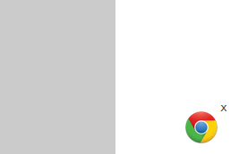

Website SDK HTTP Installation
Jeapie SDK Installation for Chrome websites (desktop + mobile)
HTTP vs. HTTPS
This is the guide for using Google Chrome push notifications on websites that have some pages served via HTTP instead of HTTPS.
If you are sure that each page is served only via HTTPS, then you should follow [this guide] (Website-SDK-HTTPS-Installation.md)
Requirements
W3C Web Push Notifications are currently only supported by Chrome 42+
- Includes Chrome for Windows, Mac OS X, Linux, Chrome OS and Android. Chrome for iOS is not yet supported by Google.
1. Include Required JeapieSDK.js
1.1 Include https://cdn.jeapie.com/jeapiejs/webpush.js in the the <head> HTML tag of each of your website pages. The best way is to add it to the code that generates the layout for each of your webpages. The resulting HTML should look like this:
<head>
<script src="https://cdn.jeapie.com/jeapiejs/webpush.js"></script>
</head>
2. Initialize Jeapie
Call Jeapie.init from a javascript file that is included in every page.
- Update
0e9b2d82456a5ad012714e981d972360with your Jeapie AppId. - Update
jeapiewith the name value you entered in our dashboard.
3.1 Init with Jeapie Widget
Call Jeapie.init from a javascript file that is included in every page. Update 0e9b2d82456a5ad012714e981d972360 with your Jeapie AppId. Add param createButton with value true.
var Jeapie = Jeapie || [];
Jeapie.init({ "appKey" : "0e9b2d82456a5ad012714e981d972360", "subdomainName": "jeapie","createButton": true});
The interactive button will appear on your site. Click it to open a window in which you will be able to allow sending notifications.

3.2 Init with your custom button.
Call Jeapie.init from a javascript file that is included in every page. Update 0e9b2d82456a5ad012714e981d972360 with your Jeapie AppId. Create or use your button and update YOUR_CUSTOM_BUTTON_ID with your button id.
var Jeapie = Jeapie || [];
Jeapie.init({ "appKey" : "0e9b2d82456a5ad012714e981d972360", "subdomainName" : "jeapie" });
//Replace YOUR_CUSTOM_BUTTON_ID with your button id
document.getElementById("YOUR_CUSTOM_BUTTON_ID").onclick = registerPush;
function registerPush() {
Jeapie.registerHttp();
}
That's It!
That’s it for now - the setup is complete. See our Web SDK API for more functions and our examples on our Github page.